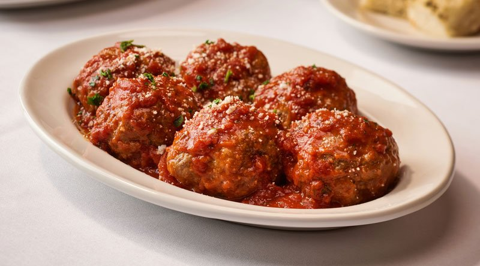

Meatball Recipe

Description
This recipe makes the most tender and tasty meatballs. I also freeze these meatballs and take out how many servings I need for each meal.
If cooking in sauce, add baked meatballs 20 minutes before serving time.
Ingredients
- 1 cup Italian-seasoned bread crumbs
- ¼ cup grated Romano cheese
- 2 tablespoons chopped fresh parsley
- ½ teaspoon salt
- ½ teaspoon ground black pepper
- ½ teaspoon garlic powder
- ½ teaspoon onion powder
- ½ cup water
- 2 eggs
- 1 ½ pounds ground beef
Steps
- Preheat the oven to 350 degrees F (175 degrees C).
- Mix bread crumbs, Romano cheese, parsley, salt, pepper, garlic powder, and onion powder together. Combine with water and eggs. Add ground beef and mix well. Roll mixture into balls and place on a nonstick baking sheet.
- Bake in the preheated oven until browned, about 30 minutes.